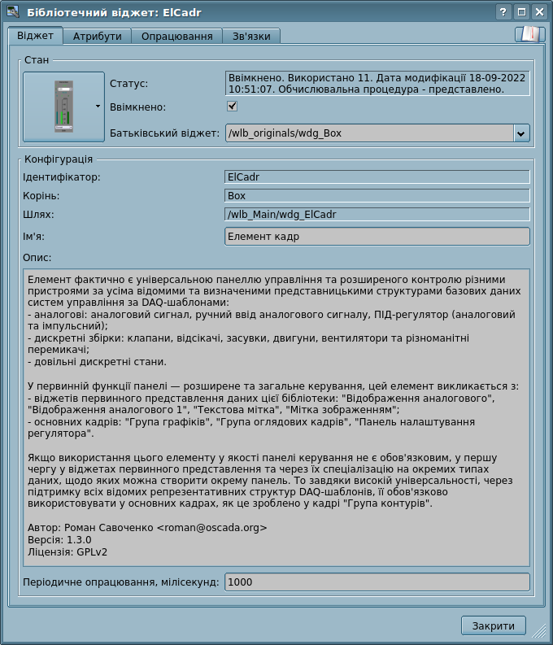
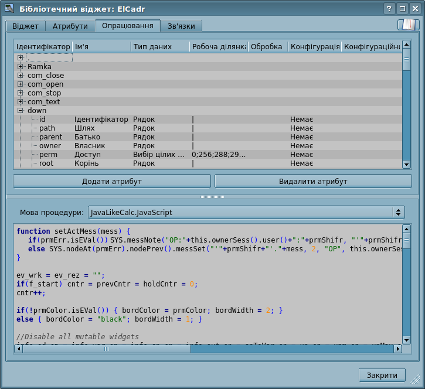

| Модуль |
Ім'я |
Версія |
Ліцензія |
Джерело |
Мови |
Платформи |
Тип |
Автор |
Опис
|
| Vision |
Робочий інтерфейс користувача (Qt)
|
7.0 |
GPL2 |
ui_Vision.so |
en,uk,ru,de |
x86,x86_64,ARM
|
Користувацькі інтерфейси |
Роман Савоченко
Максим Лисенко (2007-2012), Ксенія Яшина (2007-2008) |
Робочий інтерфейс користувача, заснований на бібліотеці Qt — зовнішній інтерфейс до рушія СВУ.
|
Модуль надає до OpenSCADA механізм кінцевої візуалізації середовища візуалізації та управління (СВУ). Модуль засновано на багатоплатформеній бібліотеці Qt графічного користувацького інтерфейсу (GUI), початково створеного фірмою TrollTech. У своїй роботі модуль використовує дані рушія СВУ — модуль VCAEngine.
Середовище візуалізації та управління (СВУ) є невід'ємною складовою SCADA системи. Воно застосовується на клієнтських станціях з метою доступного представлення інформації про об'єкт управління та видачі керуючого впливу на об'єкт. У різних практичних ситуаціях та умовах можуть застосовуватися СВУ, побудовані на різних принципах візуалізації. Наприклад, це можуть бути бібліотеки віджетів Qt, GTK+, wxWidgets або гіпертекстові механізми на основі технологій HTML, XHTML, XML, CSS та JavaScript або сторонні додатки візуалізації, реалізовані на різних мовах програмування Java, Python та інше. Будь-який з цих принципів має свої переваги та недоліки, комбінація яких може стати непереборною перепоною у можливості використання СВУ у тому або іншому практичному випадку. Наприклад, технології на кшталт бібліотеки Qt дозволяють створювати високопродуктивні СВУ, що безсумнівно важливо для станцій оператору управління технологічним процесом (ТП). Однак, необхідність інсталяції даного клієнтського ПЗ може зробити його використання неможливим у окремих випадках. З іншого боку, Web-технології не потребують інсталяції на клієнтські системи та є гранично багатоплатформними (достатньо вказати посилання на Web-сервер у будь-якому Web-браузері), що найбільш важливо для різних інженерних та адміністративних станцій. З іншого боку, продуктивність та надійність таких інтерфейсів нижче, що практично виключає їх використання на станціях оператору ТП.
OpenSCADA має гранично гнучку архітектуру, яка дозволяє створювати зовнішні інтерфейси, у тому числі й користувацькі, на будь-якій основі та смак. Наприклад, середовище конфігурації OpenSCADA доступне як на Qt-бібліотеці, так і на Web-основі.
У той-же час, незалежне створення реалізацій СВУ на різній основі може потягти за собою неможливість використання даних конфігурації однієї СВУ на іншій. Що незручно та обмежено з користувацького боку, а також витратно у плані реалізації та подальшої підтримки.
З метою запобігання цим проблемам, а також створення у найкоротші терміни повного спектру різних типів СВУ, засновано проект створення концепції СВУ. Результатом цього проекту і став даний модуль безпосередньої візуалізації (на основі бібліотеки Qt), модуль безпосередньої візуалізації WebVision та рушій СВУ VCAEngine.
1 Призначення
Даний модуль безпосередньої візуалізації СВУ призначено для формування та виконання інтерфейсів СВУ у середовищі графічної бібліотеки Qt. Модуль СВУ, переважно, забезпечує:
Перелічимо можливості, які зможе та забезпечує СВУ, побудована на основі даного проекту:
- три рівні складності у формуванні інтерфейсу візуалізації, які дозволяють органічно освоювати та застосовувати інструментарій за принципом — від простого до складного:
- формування з шаблонних кадрів, шляхом призначення динаміки та без графічної конфігурації;
- графічне формування нових кадрів, шляхом використання готових елементів візуалізації з бібліотеки — мнемосхеми;
- формування, у бібліотеці, нових: кадрів, шаблонних кадрів та елементів відображення.
- побудова інтерфейсів візуалізації практично будь-якої складності (обмежену "дискретністю" функцій примітивів), починаючи від простих інтерфейсів моніторингу та, закінчуючи повноцінними ієрархічними інтерфейсами, що використовуються у SCADA системах;
- надання різних способів формування та конфігурації користувацького інтерфейсу, заснованих на різних інтерфейсах графічного представлення (Qt, Web, ...), або-ж за посередництвом стандартного інтерфейсу управління OpenSCADA;
- побудова та корекція інтерфейсу, призначення та зміна динаміки у процесі виконання;
- побудова, на рівні користувача, нових шаблонних кадрів та формування спеціалізованих, під область застосування, бібліотек кадрів (наприклад, включення кадрів параметрів, графіків та інших елементів з ув'язкою їх один з другим), згідно до ідеї вторинного використання, накопичення та вдосконалення;
- побудова нових користувацьких елементів візуалізації та формування спеціалізованих, під область застосування, бібліотек кадрів, згідно до ідеї вторинного використання, накопичення та вдосконалення;
- опис логіки нових шаблонних кадрів та користувацьких елементів візуалізації як простими зв'язками, так і лаконічною, повноцінною мовою користувацького програмування;
- можливість включення, до користувацьких елементів візуалізації, функцій (або кадрів обчислення функцій) об'єктної моделі OpenSCADA, практично зв'язуючи представлення з алгоритмом обчислення; наприклад, візуалізуючи бібліотеку моделей апаратів ТП, для подальшої візуальної побудови моделей ТП;
- розподіл даних користувацьких інтерфейсів та інтерфейсів представлення цих даних, що дозволяє будувати інтерфейс користувача у одному середовищі, а виконувати у багатьох інших (Qt, Web, ...);
- можливість підключення до виконуваного інтерфейсу для спостереження та корекції дій; наприклад, при навчанні операторів та контролю за його діями у реальному часі;
- візуальна побудова різних схем з накладанням логічних зв'язків та подальшим централізованим виконанням у фоні — візуальна побудова та виконання математичних моделей, логічних схем, релейних схем та іншого;
- надання, до OpenSCADA, функцій об'єктного API; може використовуватися для управління властивостями інтерфейсу візуалізації із користувацьких процедур;
- побудова серверів для: кадрів, елементів візуалізації та проектів інтерфейсів візуалізації; з можливістю обслуговування множинних клієнтських підключень;
- проста організація клієнтських станцій на різній основі (Qt, Web, ...), з підключенням до центрального серверу;
- повноцінний механізм розподілу повноважень між користувачами, що дозволяє створювати та виконувати проекти з різними правами доступу до його компонентів;
- гнучке формування правил сигналізацій та повідомлень, з урахуванням та підтримкою різних способів повідомлення;
- підтримка користувацького формування палітри та шрифтових переваг інтерфейсу візуалізації, в стилях;
- підтримка користувацького формування карт повідомлень під різне обладнання управління та переваги користувача;
- підтримка профілів користувача, що дозволяють визначати різні властивості інтерфейсу візуалізації (гама кольорів, шрифтові особливості, переважні карти повідомлень);
- гнучке зберігання та розповсюдження бібліотек віджетів, кадрів та проектів інтерфейсів візуалізації у БД, підтримуваних OpenSCADA; практично, користувачу треба тільки зареєструвати отриману БД з даними.
2 Інструмент графічного формування інтерфейсу СВУ
Розробка інтерфейсу СВУ виконується у одному вікні, що реалізує багатодокументний інтерфейс (MDI) (рис.2.a). Даний підхід дозволяє одночасно відкривати декілька кадрів різних розмірів. Використано наступні механізми управління розробкою: панелі інструментів, пункти меню та контекстне меню. Більшість дій дублюються різними механізмами, що дозволяє швидко знайти інструмент зручним способом. Навігаційні інтерфейси реалізовано приєднуваними вікнами. Конфігурація панелей інструментів та приєднуваних вікон зберігається при виході та відновлюється при старті, що дозволяє налаштовувати інтерфейс під себе.

Рис.2.a. Вікно розробки інтерфейсів СВУ.
Доступ до основних компонентів СВУ здійснюється за посередництвом приєднуваних вікон, на рисунку 2.a ці вікна зображено ліворуч. У цих вікнах міститься:
- Дерево бібліотек віджетів. За допомогою навігатору можна швидко знайти потрібний віджет або бібліотеку та здійснити над ними потрібні операції. Реалізовано операції: додання, видалення, копіювання, виклику налаштування віджетів та бібліотек, очищення та виклику візуального редагування віджетів. Для гнучкого управління, підтримується контекстне меню у складі пунктів:
- "Нова бібліотека" — створення нової бібліотеки.
- "Додати візуальний елемент" — додавання візуального елементу до бібліотеки.
- "Видалити візуальний елемент" — видалення візуального елементу з бібліотеки.
- "Очистити візуальний елемент" — очищення візуального елементу з наслідуванням змінених властивостей або встановленням їх по замовченню.
- "Опустити зміни візуального елементу" — опускання змін візуального елементу до його батька, які буде використано іншими наслідувальними.
- "Властивості візуального елементу" — виклик конфігурації візуального елементу.
- "Редагувати візуальний елемент" — виклик візуального редагування елементу.
- "Копіювати візуальний елемент" — копіювання візуального елемента, під час вставки.
- "Вирізати візуальний елемент" — вирізання-переміщення візуального елементу, на момент вставки.
- "Вставити візуальний елемент" — вставка візуального елементу.
- "Завантажити з БД" — завантаження даних візуального елементу з БД.
- "Зберегти у БД" — збереження даних візуального елементу у БД.
- "Підручник на ..." — виклик підручника на обрану бібліотеку.
- "Оновити бібліотеки" — перечитування конфігурації та складу бібліотек з моделі даних.
- Дерево сторінок проектів. Передбачає механізм "Перетягни та кинь" для формування користувацьких кадрів на основі елементів бібліотек. Для гнучкого управління, підтримується контекстне меню, у складі пунктів:
- "Запустити виконання проекту" — запуск виконання обраного проекту.
- "Новий проект" — створення нового проекту.
- "Додати візуальний елемент" — додавання візуального елементу до проекту-сторінки.
- "Видалити візуальний елемент" — видалення візуального елементу з проекту-сторінки.
- "Очистити візуальний елемент" — очищення візуального елементу з наслідуванням змінених властивостей або встановленням їх по замовченню.
- "Опустити зміни візуального елементу" — опускання змін візуального елементу до його батька, які буде використано іншими наслідувальними.
- "Властивості візуального елементу" — виклик конфігурації візуального елементу.
- "Редагувати візуальний елемент" — виклик візуального редагування елементу.
- "Копіювати візуальний елемент" — копіювання візуального елемента, під час вставки.
- "Вирізати візуальний елемент" — вирізання-переміщення візуального елементу, на момент вставки.
- "Вставити візуальний елемент" — вставка візуального елементу.
- "Завантажити з БД" — завантаження даних візуального елементу з БД.
- "Зберегти у БД" — збереження даних візуального елементу у БД.
- "Оновити проекти" — перечитування конфігурації та складу проектів з моделі даних.
- Панель управління атрибутами віджетів;
- Панель управління зовнішніми зв'язками віджетів.
У основному просторі робочого вікна розташовуються вікна сторінок проектів, кадрів бібліотек віджетів, користувацьких елементів та елементів примітивів на момент їх візуального редагування.
Нагорі робочого вікна міститься меню. У меню розташовано всі інструменти, потрібні для розробки інтерфейсів СВУ. Меню має наступну структуру:
- "Файл" — Загальні операції.
- "Завантажити з БД" — завантаження даних візуального елементу з БД.
- "Примусово завантажити з БД" — примусове завантаження даних візуального елементу з БД, не тільки коли змінено.
- "Зберегти у БД" — збереження даних візуального елементу у БД.
- "Примусово зберегти у БД" — примусове збереження даних візуального елементу у БД, не тільки коли змінено.
- "Закрити" — закриття вікна редактору.
- "Вихід" — вихід з програми.
- "Редагування" — Операції редагування візуальних елементів.
- "Відмінити зміни візуального елементу" — здійснення відміни(відкату) останніх змін візуального елементу.
- "Повторити зміни візуального елементу" — здійснення повтору змін візуального елементу.
- "Копіювати візуальний елемент" — копіювання візуального елемента, під час вставки.
- "Вирізати візуальний елемент" — вирізання-переміщення візуального елементу, на момент вставки.
- "Вставити візуальний елемент" — вставка візуального елементу.
- "Проект" — Операції над проектами.
- "Запустити проект" — запуск виконання обраного проекту.
- "Новий проект" — створення нового проекту.
- "Додати візуальний елемент" — додавання візуального елементу до проекту.
- "Видалити візуальний елемент" — видалення візуального елементу з проекту.
- "Очистити візуальний елемент" — очищення візуального елементу з наслідуванням змінених властивостей або встановленням їх по замовченню.
- "Опустити зміни візуального елементу" — опускання змін візуального елементу до його батька, які буде використано іншими наслідувальними.
- "Властивості візуального елементу" — виклик конфігурації візуального елементу.
- "Редагувати візуальний елемент" — виклик візуального редагування елементу.
- "Віджет" — Операції над віджетами та бібліотеками віджетів.
- "Нова бібліотека" — створення нової бібліотеки.
- "Додати візуальний елемент" — додавання візуального елементу до бібліотеки.
- "Видалити візуальний елемент" — видалення візуального елементу з бібліотеки.
- "Очистити візуальний елемент" — очищення візуального елементу з наслідуванням змінених властивостей або встановленням їх по замовченню.
- "Опустити зміни візуального елементу" — опускання змін візуального елементу до його батька, які буде використано іншими наслідувальними.
- "Властивості візуального елементу" — виклик конфігурації візуального елементу.
- "Редагувати візуальний елемент" — виклик візуального редагування елементу.
- "Вид" — управління розташуванням візуальних елементів на кадрах.
- "Підняти" — підняття віджету вище.
- "Опустити" — опускання віджету нижче.
- "Підняти нагору" — підняття віджета на самий верх.
- "Опустити додолу" — опускання віджету на самий низ.
- "Вирівняти ліворуч" — вирівнювання віджету ліворуч.
- "Вирівняти у центрі вертикально" — вирівнювання віджету вертикально у центрі.
- "Вирівняти праворуч" — вирівнювання віджету праворуч.
- "Вирівняти зверху" — вирівнювання віджета догори.
- "Вирівняти у центрі горизонтально" — вирівнювання віджету горизонтально у центрі.
- "Вирівняти додолу" — вирівнювання віджету додолу.
- "Бібліотека: {Ім'я бібліотеки}" — пункти меню доступу до кадрів-віджетів, що містяться у бібліотеці.
- "Вікно" — Управління MDI вікнами.
- "Закрити" — закриття активного вікна.
- "Закрити всі" — закриття всіх вікон.
- "Укласти" — укладка всіх вікон для одночасної видимості.
- "Каскадувати" — розташування всіх вікон каскадом.
- "Наступне" — активація наступного вікна.
- "Попереднє" — активація попереднього вікна.
- "Віджет: {Ім'я віджету}" — пункти активації конкретного вікна.
- "Вид" — Управління видимістю робочого вікна та панелей на ньому.
- "Весь екран" — розгортання робочого вікна на весь екран.
- "Панель візуальних елементів" — панель управління візуальними елементами.
- "Функції розташування віджетів" — панель управління розташуванням віджетів на кадрах.
- "Інструменти елементарної фігури" — додаткова панель інструментів редагування примітиву елементарної фігури ("ElFigure").
- "Проекти" — пришвартоване вікно управління деревом проектів.
- "Віджети" — пришвартоване вікно управління деревом бібліотек віджетів.
- "Атрибути" — пришвартоване вікно диспетчеру атрибутів.
- "Зв'язки" — пришвартоване вікно диспетчеру зв'язків.
- "Бібліотека: {Ім'я бібліотеки}" — управління видимістю панелей бібліотек віджетів.
- "Допомога" — Допомога з OpenSCADA та цього модуля.
- "Про" — інформація про даний модуль.
- "Про Qt" — інформація по бібліотеці Qt, що використовується модулем.
- "Підручник на 'Vision'" — виклик підручника на цей модуль.
- "Підручник на 'VCAEngine'" — виклик підручника на рушій середовища візуалізації та управління.
- "Підручник на 'OpenSCADA 0.9.0'" — виклик підручника на OpenSCADA загалом.
- "Підручник на ..." — виклик підручника на обрану бібліотеку.
- "Що це" — запит опису елементів інтерфейсу вікна.
- "QTStarter" — Пункт меню, створений модулем запуску модулів бібліотеки Qt. Містить кнопки запуску UI модулів OpenSCADA, заснованих на бібліотеці Qt. За допомогою цього пункту можна відкрити декілька екземплярів вікон даного модуля або інших модулів.
Нагорі, під меню, або по сторонам розташовуються панелі інструментів. Панелі може бути приховано або розташовано, що керується у пункті меню "Вид". Передбачено наступні панелі інструментів:
- "Панель візуальних елементів" — Панель управління візуальними елементами:
- "Запуск виконання проекту для обраного елементу" — призводить запуск проекту на виконання та активацію обраної сторінки проекту.
- "Завантажити дані елементу з БД" — виконує завантаження даних обраного(их) елементу з БД.
- "Зберегти дані елементу у БД" — виконує збереження даних обраного(их) елементу у БД.
- "Новий проект" — створення нового проекту.
- "Нова бібліотека віджетів" — створення нової бібліотеки віджетів.
- "Додати візуальний елемент" — додавання візуального елементу.
- "Видалити візуальний елемент" — видалення візуального елементу.
- "Властивості візуального елементу" — виклик конфігурації візуального елементу.
- "Редагувати візуальний елемент" — виклик візуального редагування елементу.
- "Відмінити зміни візуального елементу" — здійснення відміни(відкату) останніх змін візуального елементу.
- "Повторити зміни візуального елементу" — здійснення повтору змін візуального елементу.
- "Копіювати візуальний елемент" — копіювання візуального елемента, під час вставки.
- "Вирізати візуальний елемент" — вирізання-переміщення візуального елементу, на момент вставки.
- "Вставити візуальний елемент" — вставка візуального елементу.
- "Функції розташування віджетів" — Панель управління розташуванням віджетів на кадрі:
- "Підняти" — підняття віджету вище.
- "Опустити" — опускання віджету нижче.
- "Підняти нагору" — підняття віджета на самий верх.
- "Опустити додолу" — опускання віджету на самий низ.
- "Вирівняти ліворуч" — вирівнювання віджету ліворуч.
- "Вирівняти у центрі вертикально" — вирівнювання віджету вертикально у центрі.
- "Вирівняти праворуч" — вирівнювання віджету праворуч.
- "Вирівняти зверху" — вирівнювання віджета догори.
- "Вирівняти у центрі горизонтально" — вирівнювання віджету горизонтально у центрі.
- "Вирівняти додолу" — вирівнювання віджету додолу.
- "Інструменти елементарної фігури" — Додаткова панель інструментів редагування примітиву елементарної фігури ("ElFigure"):
- "Повернення курсору" — повернення до курсору для дій над фігурами на віджеті.
- "Додати лінію" — додання лінії до елементарної фігури.
- "Додати дугу" — додання дуги до елементарної фігури.
- "Додати криву Без'є" — додання кривої Без'є до елементарної фігури.
- "Прив'язки" — включення прив'язок до елементарної фігури.
- "Бібліотека: {Ім'я бібліотеки}" — Вміст панелі залежить від вмісту бібліотеки та включає кнопки виклику елементів бібліотеки.
Унизу вікна розробки СВУ розташовується рядок статусу. Праворуч рядка статусу розташовуються індикатори візуального масштабу редагованого кадру, режиму зміни розміру елементів, режиму поточної станції рушія СВУ та користувача, від ім'я якого ведеться розробка інтерфейсу СВУ. За подвійним кліком на індикаторі користувача можна користувача змінити, ввівши нове ім'я та пароль користувача. У головному полі рядка статусу виводяться різні інформаційні повідомлення та повідомлення допомоги.
Для редагування властивостей візуальних елементів передбачено два діалоги. Перший діалог дозволяє редагувати властивості контейнерів візуальних елементів (рис.2.b) — бібліотек віджетів та проектів. Другий діалог для редагування властивостей самих візуальних елементів (рис.2.d). Зміни, внесені у діалогах, одразу-ж потрапляють до рушія СВУ. Для збереження цих змін у БД, або відновлення з БД, потрібно скористатися відповідними інструментами головного вікна розробки.
Рис.2.b. Діалог редагування властивостей контейнерів візуальних елементів.
За допомогою головної вкладки цього діалогу можна встановити:
- Стан контейнеру елементів, а саме: "Ввімкнено", БД контейнеру, лічильник використання, дата та час останньої модифікації.
- Ідентифікатор, ім'я та опис контейнеру.
- Для проекту:
- користувач, група користувачів та доступ для: користувача, групи користувачів та всіх інших;
- період обчислення проекту при виконанні.

Рис.2.с. Вкладка "Діагностика" проекту.
У цій вкладці Ви можете, для отримання діагностичних повідомлень: обрати час, освіжити до поточного часу та обрати розмір-глибину.
 Рис.2.d. Діалог редагування властивостей візуальних елементів.
За допомогою головної вкладки цього діалогу можна встановити:
- Стан елементу, а саме: "Ввімкнено", батьківський віджет, тип сторінки (для сторінок проекту), лічильник використання, дата та час останьої модифікації.
- Ідентифікатор, корінь, шлях, ім'я та опис елементу.
Діалог редагування властивостей контейнерів візуальних елементів містить дві вкладки: вкладку конфігурації основних параметрів (рис.2.b) та вкладку конфігурації mime-даних контейнерів (рис.2.e).
Рис.2.e. Вкладка редагування mime-даних контейнеру візуальних елементів.
Діалог редагування властивостей візуальних елементів містить чотири вкладки: вкладку конфігурації основних параметрів (рис.2.b), вкладку атрибутів елементу (рис.2.f), вкладку обробки елементу (рис.2.g) та вкладку зв'язків елементу (рис.2.h). На різних рівнях ієрархії візуальних елементів якісь вкладки можуть бути доступні, а якісь ні.

Рис.2.f. Вкладка атрибутів діалогу редагування властивостей візуального елементу.
 Рис.2.g. Вкладка обробки діалогу редагування властивостей візуального елементу.

Рис.2.h. Вкладка зв'язків діалогу редагування властивостей візуального елементу.
2.1 Стилі
Відомо, що людина може мати індивідуальні особливості сприйняття графічної інформації. Якщо ці особливості не враховувати то можна отримати несприйняття та відторгнення користувача до інтерфейсу ВУ. Таке несприйняття та відторгнення може призвести до фатальних помилок при управлінні ТП, а також травмувати людину постійною роботою з інтерфейсом. У SCADA системах прийнято домовленості, які регламентують вимоги по створенню уніфікованого інтерфейсу ВУ, що нормально сприймається більшістю людей. При цьому, практично відсутнє врахування особливостей людей з деякими відхиленнями.
З метою врахувати цю обставину, та надати можливість централізовано та просто змінювати візуальні властивості інтерфейсу, проектом реалізується менеджер стилів інтерфейсу візуалізації.
Користувачем може бути створено багато стилів, кожний з яких буде зберігати кольорові, шрифтові та інші властивості елементів кадру. Проста зміна стилю дозволить швидко видозмінити інтерфейс ВУ, та можливість призначення індивідуального стилю до користувача дозволить врахувати його особливості.
Для реалізації цієї можливості, при створені кадрів, необхідно для властивостей кольору, шрифту та інших встановити параметр "Конфігурація" (таблиці у вкладці "Обробка") у значення "З стилю". А у параметрі "Конфігураційний шаблон" вказати ідентифікатор поля стиля. Далі, це поле автоматично з'явиться у менеджері стилів та його можна буде там змінювати. Менеджер стилів доступний на сторінці конфігурації проекту у вкладці "Стилі". На цій вкладці можна стилі створювати, видаляти та змінювати, видаляти їх поля.
Загалом, стилі доступні починаючи з рівня проектів. На рівні бібліотек віджетів можна тільки визначати поля стилів у віджетів. На рівні проекту, при виборі стиля, включається робота зі стилями, що передбачає доступ до полів стилів замість безпосередніх значень атрибутів. Фактично, це означає, що при читанні або записі атрибуту віджету, вказані операції будуть здійснюватися над відповідним полем обраного стилю.
При запуску проекту на виконання буде використано встановлений у проекті стиль. Надалі, користувач може обрати стиль з переліку доступних. Обраний користувачем стиль буде збережено та використано при наступному запуску проекту.
2.2 Зв'язування з динамікою
Для надання до інтерфейсу візуалізації актуальних даних, повинні використовуватися дані підсистеми "Збір даних (DAQ)". Природа цих даних наступна:
- параметри, що містять деяку кількість атрибутів;
- атрибути параметру можуть надавати дані п'яти типів: Логічний, Цілий, Реальний, Рядок та Об'єкт;
- атрибути параметру можуть мати архів (історію);
- атрибути параметру можуть бути на читання, запис та з повним доступом.
Враховуючи перший пункт, треба забезпечити можливість групового призначення посилання. Для цього використовуємо концепцію логічного рівня.
Зв'язки забезпечують прозоре перетворення типів та не потребують спеціальної конфігурації.
Для задоволення можливості доступу до архівам зв'язки виконують перевірку типу атрибуту та, у випадку підключення до "Адреси", до значення поміщається адреса зв'язку.
У термінах СВУ, динамічні зв'язки та конфігурація динаміки є одним процесом, для опису конфігурації якого передбачено вкладку "Обробка" віджетів (рис.2.f). Вкладка містить таблицю конфігурації властивостей атрибутів та текст процедури обчислення віджету.
Окрім полів конфігурації атрибутів, у таблиці передбачається стовпчик "Обробка", для вибіркового використання атрибутів у обчислювальній процедурі віджета, та стовпчика "Конфігурація", "Конфігураційний шаблон" для опису конфігурації зв'язків.
Стовпчик "Конфігурація" дозволяє вказати тип зв'язку атрибуту віджета:
- Постійна — у вкладці зв'язків віджету з'являється поле визначення постійної, наприклад, особливого кольору або заголовку шаблонних кадрів.
- Вхідний зв'язок — зв'язок з динамікою тільки для читання.
- Вихідний зв'язок — зв'язок з динамікою тільки для запису.
- Повний зв'язок — повний зв'язок з динамікою, читання та запис.
- Зі стиля — брати значення зі стиля проекту.
Стовпчик "Конфігураційний шаблон" дозволяє зв'язати групи динамічних атрибутів. Наприклад, це можуть бути різні типи параметрів підсистеми "DAQ" та інші віджети інтерфейсу. При коректному формуванні цього поля працює механізм автоматичного призначення атрибутів, при визначені тільки параметру підсистеми "DAQ" або віджету інтерфейсу, що спрощує та прискорює процес конфігурації. Значення цього стовпчика має наступний формат:
- Для постійної: пряме значення атрибуту.
- Для зв'язку: "{параметр}|{ідентифікатор}", де:
- параметр — група атрибутів;
- ідентифікатор — ідентифікатор атрибуту; саме значення у цьому полі співставляється з атрибутами параметрів DAQ після указання групового зв'язку, при автоматичному зв'язувані;
- Для стиля: ідентифікатор-ім'я поля стиля.
Встановлення зв'язків може бути декількох типів, який визначається префіксом:
- val: — Пряме завантаження значення через механізм зв'язків. Наприклад, зв'язок "val:100" завантажує значення 100 до атрибуту віджета. Часто використовується у випадку відсутності кінцевої точки зв'язку, з метою прямого встановлення значення.
- prm: — Зв'язок на атрибут параметру або параметр, загалом, для групи атрибутів підсистеми "Збір даних". Наприклад, зв'язок "prm:/LogicLev/experiment/Pi/var" здійснює доступ атрибуту віджета до атрибуту параметра підсистеми "Збір даних". Знак "(+)", у кінці адреси, вказує на вдалу лінковку та присутність цільового об'єкту. Для атрибутів об'єктного типу допустимий ієрархічний доступ до конкретної властивості об'єкту, шляхом вказання її шляху через символ '#', наприклад: "prm:/LogicLev/experiment/Pi/var#pr1/pr2".
- wdg: — Зв'язок на атрибут іншого віджета або віджет, загалом, для групи атрибутів. Наприклад, зв'язок "wdg:/ses_AGLKS/pg_so/pg_1/pg_ggraph/pg_1/a_bordColor" здійснює доступ атрибуту одного віджету до атрибуту іншого. Підтримуються як абсолютні, так і відносні шляхи зв'язків. Точкою відліку адреси абсолютного зв'язку виступає об'єкт кореня модуля "VCAEngine", що означає — першим елементом абсолютної адреси є ідентифікатор сеансу або проекту. Перший елемент, на боці сеансу, опускається, тому зв'язки, встановлені у проекті, там працюють. Відносні зв'язки беруть відлік від віджету, де зв'язок вказано. Спеціальним елементом відносного зв'язку є елемент вищестоящого вузла "..".
- arh: — Особливий тип зв'язку, доступний тільки для окремого атрибуту типу "Адреса", який дозволяє підключитися прямо до архіву значень ("arh:CPU_load"). Може бути корисний для вказання архіву у якості джерела даних примітиву "Діаграма".
Обробка зв'язків відбувається з періодичністю обчислення віджету, у порядку:
- отримання даних вхідних зв'язків;
- виконання обчислення процедури віджету;
- передача значень за вихідними зв'язками.
На рисунку 2.g представлено вкладку зв'язків з можливістю групового та індивідуального призначення атрибутів.
При розташуванні віджета до контейнеру віджетів всі зв'язки початкового віджета додаються до переліку результуючих зв'язків контейнеру віджетів, однак, тільки на глибину у один рівень вкладення.
З вищесказаного видно, що зв'язки встановлюються користувачем у процесі конфігурації інтерфейсу. Однак, для надання можливості створення кадрів загального призначення з функцією надання деталізованих даних різних джерел одного типу, потрібен механізм динамічного встановлення зв'язків. Такий механізм передбачається:
- резервуванням ключового ідентифікатору "<page>" для групи атрибутів зв'язків у кадрів загального призначення;
- динамічним призначенням зв'язків з ідентифікатором "<page>", у процесі відкриття кадру загального призначення за сигналом від іншого віджета.
Розглянемо приклад, коли є кадр загального призначення "Панель контролю графіком" та багато "Графіків" на різних кадрах. "Панель контролю графіком" має зв'язки з шаблонами:
- tSek -> "<page>|tSek"
- tSize -> "<page>|tSize"
- trcPer -> "<page>|trcPer"
- valArch -> "<page>|valArch"
При цьому, кожний віджет "Графік" має атрибути "tSek", "tSize", "trcPer" та "valArch". За викликом сигналу відкриття "Панелі контролю графіком" з будь-якого віджету "Графік", відбувається зв'язування атрибутів "Панелі контролю графіком" з атрибутами віджету "Графік", згідно шаблону. як результат, всі зміни на "Панелі контролю графіком" будуть відображатися на графіку, за посередництвом цих зв'язків.
Якщо у віджета "Графік" наявні зовнішні зв'язки на параметри підсистеми "Збір даних", зв'язки "Панелі контролю графіком" будуть встановлюватися на зовнішнє джерело. Крім того, якщо у "Панелі контролю графіком" будуть заявлені зв'язки на атрибути, відсутні безпосередньо у віджета "Графік", то буде здійснюватися пошук наявності таких атрибутів у зовнішнього джерела — першого на який встановлено прямий зв'язок, виконуючи, тим самим, доповнення відсутніх зв'язків.
Для наочного зображення цього механізмі наведено таблицю.
Таблиця. Механізм динамічної лінковки.
| Атрибути "Панелі контролю графіком" (шаблон динамичного зв'язку) |
Атрибути "Графіка" |
Атрибути зовнішнього "Параметру" |
Результуючий зв'язок або значення атрибута, що зв'язується
|
| tSek (<page>|tSek) |
tSek |
- |
"Графік".tSek
|
| tSize (<page>|tSize) |
tSize |
- |
"Графік".tSize
|
| trcPer (<page>|trcPer) |
trcPer |
- |
"Графік".trcPer
|
| valArch (<page>|valArch) |
valArch |
- |
"Графік".valArch
|
| var (<page>|var) |
var |
var |
"Параметр".var
|
| ed (<page>|ed) |
- |
ed |
"Параметр".ed
|
| max (<page>|max) |
- |
- |
EVAL
|
| min (<page>|min) |
- |
- |
EVAL
|
3 Виконання інтерфейсів СВУ
Виконання інтерфейсу СВУ полягає у запуску нового сеансу проекту або підключені до чинного, на рівні рушія СВУ. Далі, модуль безпосередньої візуалізації відображає та керує даними сеансу. Головне вікно режиму виконання даного модуля має вигляд, представлений на рисунку 3.
Реалізовано оновлення вмісту відкритих сторінок інтерфейсу візуалізації з періодичністю виконання візуалізованого сеансу проекту візуалізації. В процесі оновлення здійснюється:
- запит у моделі переліку відкритих сторінок, з ознакою модифікації сторінки, та перевірка відповідності реально відкритих сторінок цьому переліку;
- запит гілки даних модифікованих сторінок;
- оновлення вмісту модифікованих сторінок та їх віджетів у відповідності до отриманих змінених даних.
При закритті вікна "Виконання" здійснюється закриття сеансу проекту у моделі даних, якщо сеанс не фоновий та це було останнє підключення.
Механізм запиту тільки змінених даних засновано на абсолютному лічильнику виконання сеансу. При внесенні реальних змін до атрибутів віджетів здійснюється запам'ятовування значення цього лічильника, що й дозволяє ідентифікувати змінені атрибути. Такий підхід дозволяє підвищити продуктивність та зменшити трафік, у випадку доступу до рушія СВУ через мережу.
Ієрархічно, модулем передбачається можливість розташування сторінок проекту як на головному вікні виконання (рис.3), так і вкладаючи всередину віджетів контейнерів, а також шляхом відкриття додаткових вікон поверх основного.
При розгортанні головного вікна виконання, або переході у повноекранний режим, виконується масштабування вмісту сторінки інтерфейсу СВУ, заповнюючи весь простір вікна та, дозволяючи, тим самим, виконувати проекти, розроблені на одну роздільну здатність екрану, на різних роздільних здатностях.
Головне вікно складається з меню (нагорі) рядку статусу (нанизу) та виконуваного вмісту сеансу між ними. Меню, у режимі виконання, позиціюється як інструмент адміністратору OpenSCADA, який містить загальносистемні функції, та доступне тільки привілейованим користувачам, що стоять у групі "root". Меню має наступну структуру:
- "Файл" — Загальні операції.
- "Друк" — друк:
- "Сторінка" — сторінку користувацького інтерфейсу;
- "Діаграма" — діаграму на користувацькому інтерфейсі;
- "Документ" — документ на користувацькому інтерфейсі.
- "Експорт" — експорт:
- "Сторінка" — сторінку користувацького інтерфейсу, у зображення;
- "Діаграма" — діаграму на користувацькому інтерфейсі, у зображення та CSV;
- "Документ" — документ на користувацькому інтерфейсі, у HTML та CSV для експортних таблиць.
- "Закрити" — закрити вікно редактору.
- "Вихід" — вихід з програми.
- "Порушення" — Квітація порушень:
- "Рівень порушення" — всі порушення;
- "Світло" — повідомлення світлом;
- "Гудок" — повідомлення гудком;
- "Звук/мова" — повідомлення звуком/мовою.
- "Вид" — Параметри відображення сеансу проекту.
- "Весь екран" — перемикач повноекранного режиму виконання.
- "Допомога" — Допомога з проекту СВУ, цього модуля та OpenSCADA.
- "Про" — інформація про даний модуль.
- "Про Qt" — інформація про бібліотеку Qt, що використано модулем.
- "Підручник проекту '{Ім'я}'" — виклик підручника на проект візуалізації — файл з ім'ям ідентифікатору проекту СВУ.
- "Підручник на 'Vision'" — виклик підручника на цей модуль.
- "Підручник на 'OpenSCADA 0.9.0'" — виклик підручника на OpenSCADA загалом.
- "QTStarter" — Пункт меню, створений модулем запуску модулів бібліотеки Qt. Містить кнопки запуску UI модулів OpenSCADA, заснованих на бібліотеці Qt. За допомогою цього пункту можна відкрити декілька екземплярів вікон даного модуля або інших модулів. У випадку з режимом виконання, це меню дозволяє відкрити вікно розробки з виконання, повторним викликом даного модуля.
На рядку статусу розташовуються:
- Праворуч:
- годинник, у повноекраному режимі;
- поточна станція рушія СВУ;
- поточний користувач, від ім'я якого виконується інтерфейс СВУ — подвійним кліком можна змінити цього користувача, ввівши нове ім'я та пароль;
- поточний стиль інтерфейсу, який можна змінити подвійним кліком;
- панель з кнопками:
- квітації порушень — кліком можна сквітувати порушення повністю або тільки потрібний тип повідомлення;
- експорту та друку — кліком викликає діалог експорту та друку типового елемента або обраного з меню, де експорт для:
- "Сторінка" — сторінку користувацького інтерфейсу, у зображення;
- "Діаграма" — діаграму на користувацькому інтерфейсі, у зображення та CSV;
- "Документ" — документ на користувацькому інтерфейсі, у HTML та CSV для експортних таблиць.
- підручнику на проект СВУ — кліком викликає підручник на проект візуалізації — файл з ім'ям ідентифікатору проекту СВУ.
- панель користувацьких дій, якщо визначено у атрибуті "statLine" — кліком лівою, правою та подвійним кліком формує подію до головної сторінки інтерфейсу.
- У головному полі рядка статусу виводяться різні інформаційні повідомлення та повідомлення допомоги.
Режим виконання (Runtime) значним чином підтримує багатомовність, яка залежить від мови обраного користувача або вікна виконання, тобто, якщо Ви зміните користувача то отримаєте інтерфейс виконання на іншій мові цього користувач. Ця функція включається динамічним перекладом повідомлень OpenSCADA.

Рис.3. Головне вікно режиму виконання.
4 Представлення базових елементів (примітивів)
Даною версією модуля реалізовано не всі образи примітивів, закладені проектом. Загалом, проектом закладено примітиви:
| Ідентифікатор |
Найменування |
Функція
|
| ElFigure |
Елементарна графічна фігура |
Примітив є основою відмальовки елементарних графічних фігур зі всілякими комбінаціями їх у одному об'єкті. Передбачається підтримка наступних елементарних фігур:
- Лінія.
- Дуга.
- Крива Без'є.
- Заливка замкненого простору.
Для всіх фігур, що містяться у віджеті, встановлюються єдині властивості товщини, кольору та інше, також, передбачається можливість указання вищеперелічених атрибутів для кожної фігури окремо та їх динамізація.
|
| FormEl |
Елемент форми |
Включає підтримку стандартних компонентів форми:
- Редагування рядку.
- Редагування тексту.
- Прапорець.
- Кнопка.
- Вибір з переліку.
- Перелік.
- Дерево.
- Таблиця.
- Слайдер.
- Стрічка прокрутки.
|
| Text |
Текст |
Елемент тексту-мітка. Характеризується типом шрифту, кольором, орієнтацією та вирівнюванням. Передбачається підтримка аргументів.
|
| Media |
Медіа |
Елемент відображення растрових та векторних зображень різних форматів, програвання анімованих зображень, програвання аудіо-фрагментів та перегляд відео-фрагментів.
|
| Diagram |
Діаграма |
Елемент діаграми з підтримкою можливості відображення декількох потоків у реальному часі для: трендів (часових графіків), частотного спектру, XY діаграм.
|
| Protocol |
Протокол |
Елемент протоколу — візуалізатор повідомлень програми, з підтримкою декількох режимів роботи.
|
| Document |
Документ |
Елемент формування звітів, журналів та іншої документації на основі доступних даних.
|
| Box |
Контейнер |
Містить механізм розташування-включення інших віджетів для формування нових, більш складних, віджетів та сторінок кінцевої візуалізації.
|
| Function, у планах |
Функція API об'єктної моделі OpenSCADA |
Невізуальний віджет, на боці виконання, що дозволяє включати обчислювальні функції об'єктної моделі OpenSCADA до СВУ.
|
 Для всіх реалізованих примітивів, крім "FormEl", цей модуль підтримує умовну генерацію повідомлень від маніпулятору миші за прозорості вказаного пікселя, більш нуля — не повна прозорість.
Для всіх реалізованих примітивів, крім "FormEl", цей модуль підтримує умовну генерацію повідомлень від маніпулятору миші за прозорості вказаного пікселя, більш нуля — не повна прозорість.
Модулем візуалізатору надається та використовується низка специфічних атрибутів загального характеру, інформацію про які наведено у таблиці. Ці атрибути автоматично створюються візуалізатором за їх відсутності та під час першого запуску, або створюються користувачем у кадрі вказаної області, за потреби.
| Ідентифікатор (область) |
Ім'я |
Призначення
|
| statLine (головна сторінка) |
Елементи рядку статусу |
Текстове поле з описом елементів рядка статусу користувача, у форматі рядка "{Id}:{Label}:{ToolTip}:{Color}:{Img}", де:
- "Id" — ідентифікатор, використовується також для формування повідомлень від віджету "stIt_{Id}".
- "Label" — візуальна мітка елементу статусу.
- "ToolTip" — спливаюча підказка стосовно елементу.
- "Color" — колір мітки.
- "Img" — зображення елементу статусу, замість мітки.
|
| runWin (головна сторінка) |
Вікно виконання |
Встановлення режиму виконання головного вікна:
- "Оригінальний розмір (0)".
- "Максимізувати (1)".
- "На весь екран (2)".
|
| keepAspectRatio (головна сторінка) |
Зберігати пропорцію при масштабуванні |
Зберігати пропорцію сторінок при масштабуванні.
|
| stBarNoShow (головна сторінка) |
Не показувати рядок статусу |
Приховати рядок статусу головного вікна.
|
| winPosCntrSave (головна сторінка) |
Управління та збереження положення вікон |
Ввімкнення управління та збереження положення вікон виконання.
|
| userSetVis (головна сторінка, створюється вручну, строковий тип) |
Встановлення користувача |
Зміна користувача або виклик діалогу для його обрання. Варіанти значення:
- "*" — виклик діалогу обрання користувача;
- "$" — зміна користувача на типового;
- "{користувач}" — пряма зміна на користувач, якщо він доступний та його права менше або дорівнюють.
|
| vs_background (види "Line edit", "Text edit", "Combo box", "List", "Tree", "Table" примітиву "FormEl") |
Користувацький фон |
Визначає користувацький фон у формі {color}-{transp} {image}
|
| vs_border (види "Line edit", "Text edit", "Combo box", "List", "Tree", "Table" примітиву "FormEl") |
Користувацька границя |
Визначає користувацьку границю у стандартній формі CSS {wdth}px {style} {color}
|
| vs_winTitle (вид "Box") |
Заголовок вікна |
Значення динамічного заголовку вікна
|
Розглянемо реалізацію кожного примітиву більш детально.
4.1 Примітив елементарної фігури (ElFigure)
Реалізовано підтримку елементарних фігур: лінія, еліптична дуга, крива Без'є та заливка замкнених контурів кольором та зображенням. Для елементарних фігур реалізовано наступні операції:
- створення/видалення фігур;
- копіювання фігур;
- переміщення та зміна розмірів фігур за допомогою маніпулятору миші та клавіатури;
- можливість зв'язування елементарних фігур одна з одною, отримуючи більш складні, для яких доступні всі властивості вихідних елементарних фігур;
- можливість одночасного переміщення декількох фігур;
- заливка замкненого контуру кольором та зображенням;
- генерація повідомлень клавіш миші під час кліку на залиті контури;
- масштабування;
- трансформація: поворот та віддзеркалення.
На рисунку представлена частина екрану з кадром, що містить елементарні фігури.
Фігури, що лежать у основі даного віджету, містять точки(початкова та кінцева), які можуть стикуватися з відповідними точками інших фігур, та точки, за допомогою яких змінюється геометрія фігури.
Додати фігуру можна з допомогою маніпулятору миші:
- Обрати бажану фігуру з контекстного меню.
- Задати, за допомогою лівої кнопки миші, початкову та кінцеву точки (для лінії, при утримані клавіші SHIFT відбувається ортогональне її відображення).
Видалити фігуру(и) можна шляхом натискання кнопки "Del", маючи виділену(і) фігуру(и).
Скопіювати фігуру(и) можна шляхом натиску комбінації клавіш "Ctrl"+"C", маючи виділену(і) фігуру(и).
Пересунути/змінити габарити фігури можна за допомогою маніпулятору миші або клавіатури:
- Виділити фігуру, клацнув по ні лівою кнопкою миші.
- Перетягти (за допомогою миші або керуючих клавіш) фігуру або одну з її контрольних точок у бажане місце та відпустити кнопку миші(клавішу).
Передбачено можливість переміщення декількох виділених фігур, обраних за допомогою утримання "Ctrl" (працює при відімкненій кнопці "Прив'язки") або мишею.
Зв'язати фігури одна з одною можна наступним чином:
- Натиснути кнопку "Прив'язки".
- Виділити одну з фігур та перемістити її початкову або кінцеву точку до бажаної початкової або кінцевої точки другої фігури так, щоб вона попадала у коло, що виникло. Зв'язані фігури переміщаються так само як і окремі — загальна точка переміщається для всіх фігур, яких вона стосується, де пріоритет віддається дузі та дві дуги не може бути з'єднано безпосередньо одна з одною.
Залити замкнений контур з фігур можна наступним чином:
- Натиснути кнопку "Прив'язки".
- Створити замкнений контур.
- Два рази клацнути мишею всередині нього.
Видалити заливку замкненого контуру можна:
- з контекстного меню, клацнув правою кнопкою маніпулятору миші по заливці;
- розірвавши контур заливки;
- подвійним кліком маніпулятору миші по вже залитому контуру.
Оберт фігури здійснюється довкола центру віджета.
4.2 Примітив тексту (Text)
Реалізовано підтримку елементу тексту зі властивостями:
- Шрифт зі властивостями: типу-класу, розміру, підсилення, нахилу, підкреслення та перекреслення.
- Колір тексту.
- Орієнтація тексту.
- Автоматичний перенос за словами.
- Вирівнювання тексту по горизонталі та вертикалі, з усіма варіантами.
- Відображення фону у вигляді кольору та зображення.
- Відображення бордюру довкола тексту з вказаним кольором, шириною та стилем.
- Відображення HTML.
- Доповнення тексту аргументами різного типу та властивостей.
На рисунку представлено частину екрана з кадром, що містить приклади тексту з використанням різних параметрів.
4.3 Примітив елементу форми (FormEl)
Реалізовано підтримку елементів форми на кадрах СВУ із закладеними властивостями, включаючи наступні типи:
- Редактор рядку — Представлено наступними видами: "Текст", "Combo", "Ціле", "Реальне", "Час", "Дата", "Час та Дата". Всі види редактору рядка підтримують підтвердження вводу.
- Редактор тексту — Надає редактор плаского тексту з підтвердженням або відмовою від вводу.
- Поле ознаки — Надає поле бінарної ознаки.
- Кнопка — Надає кнопку з підтримкою кольору кнопки, зображення у кнопці та режимів:
- стандартний;
- перемикальний;
- виклик меню;
- виклик завантаження файлу;
- виклик збереження файлу.
- Вибір з переліку — Надає поле вибору елементу з переліку вказаних елементів.
- Перелік — Надає поле переліку з контролем за поточним елементом.
- Дерево — Надає елемент дерева з можливістю обрання елементів.
- Таблиця — Надає елемент таблиці з можливістю вибору клітинок, рядків або стовпчиків, а також редагування вмісту клітинки.
- Слайдер — Елемент слайдеру.
- Прогрес-бар — Стрічка прогрес-бару.
- Пароль — Приховане введення паролю.
Реалізовано режими "Ввімкнено" та "Активний", а також передача змін та повідомлень у модель даних СВУ — рушій. Режим "Активний" призводить до встановлення курсору активності для непорожнього фону та додаткових умов різних видів "Text", "Media" та "Box":
- Text — не порожній текст;
- Media — не порожнє джерело зображення.
На рисунку представлено частину екрану з кадром, що містить вищеперелічені елементи форми.
4.4 Примітив відображення медіа-матеріалів (Media)
Реалізовано підтримку елементу відображення медіа-матеріалів з властивостями:
- Вказання джерела медіа даних: зображення або відео-матеріалу.
- Перегляд зображень більшості відомих форматів з можливістю їх вписування у розмір віджету.
- Програвання простих анімованих форматів зображень та відео з можливістю управління швидкістю програвання.
- Програвання повноформатного відео та аудіо, за посередництвом Phonon.
- Відображення фону у вигляді кольору та зображення.
- Відображення бордюру по периметру віджету, з вказаним кольором, шириною та стилем.
- Формування активних областей та генерація повідомлень при їх активації.
На рисунку представлено частину екрану з кадром, що містить приклади перегляду/програвання медіа-даних.
4.5 Примітив побудови діаграм (Diagram)
Реалізовано підтримку елементу побудови діаграм для типів "Графік", "Спектр" та "XY", з властивостями:
- Загальні властивості типів діаграми "Графік", "Спектр" та "XY":
- можливість вибору архіватору, буферу архіву або всіх даних, при роботі з архівними даними;
- адаптація графіку параметра до реальних значень даних шляхом підлаштування шкалы, у випадку відсутності прямо вказаного діапазону значень;
- управління масштабом шкали значень шляхом збільшення, зменшення та зсуву;
- широкий діапазон масштабування та адаптації шкали часу з автоматичним приведенням запитаних даних до якості достатньої до відображення, або потрібної для експорту — вказанням граничної кількості вимірів у пікселі;
- відображення розмірної ґратки та маркерів по горизонталі та вертикалі з адаптацією до діапазону відображення;
- слідкуючий режим за поточним часом шляхом періодичного оновлення та зміщення часу діаграми до поточного часу — часу останніх даних у буфері архіву;
- горизонтальний слайдинг/ковзання за допомогою миші;
- масштабування ділянки обрамленої вікном, мишею.
- Властивості типу діаграми "Графік":
- побудова графіків до 100 параметрів на одній діаграмі у процентній шкалі та можливістю відображення обраних параметрів у власній шкалі;
- побудова графіку для: поточних, архівних та користувацьких даних;
- формування проміжного буферу відображення для поточних значень;
- підтримка активного режиму з курсором та отриманням значень під курсором;
- можливість побудови графіків як у лінійній, так і логарифмічній шкалі значень.
- Властивості типу діаграми "Спектр":
- побудова графіків частотного спектру параметрів до 100 на одній діаграмі у процентній шкалі та можливістю відображення обраних параметрів у власній шкалі;
- побудова графіку для: архівних та користувацьких даних;
- підтримка активного режиму з курсором та отриманням значень під курсором.
- Властивості типу діаграми "XY":
- побудова XY графіків параметрів до 50 на одній діаграмі у процентній шкалі та можливістю відображення обраних параметрів у власній шкалі;
- побудова графіку для: поточних, архівних та користувацьких даних;
- формування проміжного буферу відображення для поточних значень;
- параметри розподіляються парами на графік, де парні за осі Y (0,2,4...) та непарні за осі X (1,3,5...);
- можливість побудови графіків як у лінійній, так і логарифмічній шкалі значень.
Модулем візуалізатору надається та використовується низка специфічних атрибутів даного примітиву, інформацію про який наведено у таблиці.
| Ідентифікатор |
Ім'я |
Призначення
|
| sclWin |
Масштабування ділянки обрамленої вікном, мишею |
Логічний тип атрибуту, створюваний користувачем вручну, за потреби. Для значення "істина" вмикається режим масштабування ділянки тренду обрамленої вікном за допомогою миші.
|
На рисунку представлено частину екрану з кадром, що містить приклади діаграм: "Графік", "Спектр" та "XY".
4.6 Примітив формування протоколу (Protocol)
Реалізовано підтримку елементу формування протоколу з властивостями:
- Формування протоколу з архіву повідомлень на вказаний час та глибину.
- Запит даних з вказаних архіваторів повідомлень.
- Вибірка даних з архівів за рівнем важливості та шаблоном категорії повідомлень.
- Підтримка режиму слідкування за появою повідомлень у архіві повідомлень.
На рисунку представлено частину екрану з кадром, що містить приклад протоколу.
4.7 Примітив формування звітної документації (Document)
Реалізовано підтримку елементу формування звітної документації з властивостями:
- Гнучке формування структури документу на основі мови гіпертекстової розмітки, що надає підтримку широких можливостей форматування документів.
- Формування документів за командою або розкладом, що необхідно для формування звітної документації до архіву, з подальшим переглядом архіву.
- Формування документів у режимі реального часу, для надання їх повністю динамічно та на основі архівів за вказаний час.
- Використання атрибутів віджету для передачі у документ значень та адрес на архіви, що дозволяє використовувати віджет документу як шаблон, при формуванні звітів з іншими вхідними даними.
У основі будь-якого документу лежить XHTML-шаблон. XHTML-шаблон це тег "body" WEB-сторінки, що містить статику документу у стандарті XHTML 1.0 та елементи виконувальних інструкцій на мові користувацького програмування OpenSCADA, у вигляді <?dp {procedure} ?>. Результуючий документ формується шляхом виконання процедур та вставки їх результату у документ.
Джерелом значень виконуваних інструкцій є атрибути віджету цього примітиву, а також всі механізми мови користувацького програмування OpenSCADA. Атрибути можуть додаватися користувачем та лінкуватися на реальні атрибути параметрів або-ж бути автономними, значення яких будуть формуватися у процедурі віджету. У випадку зі злінкованими атрибутами, значення можуть вийматися з архіву-історії.
На рисунку представлено кадр, що містить приклад документу.
4.8 Примітив контейнеру (Box)
Реалізовано підтримку примітиву контейнеру, що, за сумісництвом, виконує роль сторінок проектів. Даний примітив є єдиним елементом-контейнером, який може включати у себе посилання на кадри з бібліотеки, формуючи тим самим користувацькі елементи потрібної конфігурації. Примітив реалізує передбачені проектом властивості. Перелічимо, по пунктах, властивості даного примітиву:
- Контейнер — Дозволяє формувати потрібні об'єкти шляхом групування базових у межах даного примітиву.
- Сторінка — Елементи, побудовані на даному примітиві, можуть виконувати роль сторінки користувацького інтерфейсу.
- Контейнер сторінок — Властивість заміщення, у процесі виконання, власного вмісту іншою сторінкою. Використовується для формування фреймів на сторінках користувацького інтерфейсу. Наприклад, головна сторінка типової SCADA-системи з об'єктами сигналізації будується саме таким чином.
- Фон — Підтримує можливість указання фону у вигляді кольору та зображення.
- Бордюр — Підтримує можливість зображення бордюру з вказаним кольором, товщиною та стилем.
Приклад редагування кадру, заснованого на даному примітиві, наведено на рисунку 2.a, а на рисунку 3 зображено сторінку, що містить контейнер сторінок, побудований на основі даного примітиву.
5 Векторний графічний редактор
5.1 Призначення
Наявність власного векторного графічного редактору є невід'ємною складовою поважаючої себе SCADA системи. Досвід показує, що найбільш інформативною формою представлення технологічних процесів є мнемосхеми — сукупність сигнальних пристроїв, зображень обладнання та внутрішніх зв'язків контрольованого об'єкту, виконувані на персональному комп'ютері. Для їх створення можна використати будь-який з існуючих графічних редакторів. Однак, отримані таким чином мнемосхеми є статичними та не відображають динаміки зміни характеристик процесу, а відтак, вони неадекватні та незручні для сприйняття. Таким чином, однією з задач, що стоять перед розробником SCADA систем, є створення графічного редактору для зображення об'єктів, характеристики яких можуть бути динамічно змінені.
5.2 Принципи та функції розробленого графічного редактору
Основою редактору, що описується, є три графічні примітиви: лінія, дуга та крива Без'є. До динамічно змінюваних характеристик цих примітивів відносяться:
- Координати контрольних точок, які використовуються для задання форми лінії, дуги або кривої Без'є. При цьому, лінія має — 2 контрольні точки, дуга — 5, крива Без'є — 4 (рис.5.2.a).
- Ширина лінії.
- Ширина бордюру (границі).
- Колір бордюру (границі).
- Стиль лінії (суцільна, пунктирна, точкова).

Рис.5.2.a. Контрольні точки лінії, дуги та кривої Без'є.
Приклади примітивів, різного кольору, товщини, стилів, з бордюрами та без них, наведено на рисунку 5.2.b.

Рис.5.2.b. Приклади примітивів, зліва направо: лінія, дуга та крива Без'є.
Передбачено можливість зв'язку різних графічних примітивів, для створення складних графічних об'єктів. Якщо пов'язані примітиви утворюють замкнений контур, то він може бути залитий кольором та зображенням (рис.5.2.c).

Рис.5.2.c. Заливки замкненого контуру кольором та зображенням.
Графічний редактор дозволяє масштабувати та повертати фігури (рис.5.2.d) — примітиви та складні графічні об'єкти.
До можливостей редактору також відносяться: виділення, переміщення, копіювання та видалення фігур.

Рис.5.2.d. Масштабування та обертання фігур.
5.3 Основні принципи роботи у графічному редакторі
Для того щоб приступити до роботи з графічним редактором, після запуску проекту OpenSCADA, необхідно викликати "Робочий користувацький інтерфейс (Qt)". У вкладці "Віджети" міститься перелік існуючих графічних бібліотек та елементів, що їм належать.
Припустимо, що нам необхідно додати графічний елемент до однієї з чинних бібліотек. Для цього виділимо ім'я бібліотеки та натиснемо кнопку ( ) на панелі інструментів. У вікні, що з'явилося, введемо ідентифікатор та ім'я нового графічного елементу. Після чого перейдемо до цього елементу та натиснемо кнопку (
) на панелі інструментів. У вікні, що з'явилося, введемо ідентифікатор та ім'я нового графічного елементу. Після чого перейдемо до цього елементу та натиснемо кнопку ( ). Праворуч з'явиться поле для рисування. За допомогою подвійного кліку мишею по цьому полю, або за допомогою контекстного меню, ввійдемо у режим редагування — режим графіченого редактору, що дозволяє здійснювати всі передбачені маніпуляції з фігурами. В той момент, коли створений нами графічний елемент знаходиться у фокусі, вкладка "Атрибути" набуде вигляду, що представлений на рисунку 5.3.a.
). Праворуч з'явиться поле для рисування. За допомогою подвійного кліку мишею по цьому полю, або за допомогою контекстного меню, ввійдемо у режим редагування — режим графіченого редактору, що дозволяє здійснювати всі передбачені маніпуляції з фігурами. В той момент, коли створений нами графічний елемент знаходиться у фокусі, вкладка "Атрибути" набуде вигляду, що представлений на рисунку 5.3.a.

Рис.5.3.a. Атрибути елементарної фігури.
За допомогою миші, або поля "Геометрія" вкладки "Атрибути", задамо розміри поля для рисування та масштабні коефіцієнти.
Скориставшись полем "Лінія" вкладки "Атрибути", задамо ширину, колір, стиль ліній, якими будемо рисувати. За допомогою поля "Границя", задамо ширину та колір бордюру. Поле "Заповнення" дозволяє задати колір та зображення заливки. "Перелік елементів" містить перелік примітивів, що використовуються при створені графічного об'єкту. Елементи всіх полів вкладки "Атрибути" можуть динамічно змінюватися у процедурах користувача.
Графічні примітиви може бути зображено за допомогою миші або зображено за допомогою переліку графічних примітивів ("Перелік елементів"). У першому випадку, координати контрольних точок створюваного примітиву обчислюються автоматично, а ширина, колір, стиль лінії, ширина та колір бордюру встановлюються по замовченню, з вкладки "Атрибути". У другому випадку, примітив необхідно описати у "Перелік елементів" наступним чином:
- line:(x1|y1):(x2|y2):width:color:border_width:border_color:style (1)
- arc:(x1|y1):(x2|y2):(x3|y3):(x4|y4):(x5|y5):width:color:border_width:border_color:style (2)
- bezier:(x1|y1):(x2|y2):(x3|y3):(x4|y4):width:color:border_width:border_color:style, (3)
Де:
- (x1|y1) — координати першої контрольної точки примітиву;
- (x2|y2) — координати другої контрольної точки примітиву;
- (x3|y3) — координати третьої контрольної точки примітиву;
- (x4|y4) — координати четвертої контрольної точки примітиву;
- (x5|y5) — координати п'ятої контрольної точки примітиву;
- width — ширина лінії, якою буде намальовано примітив;
- color — колір лінії, якою буде намальовано примітив;
- border_width — ширина бордюру;
- border_color — колір бордюру;
- style — стиль лінії ("0" — суцільна, "1" — пунктир, "2" — точкова).
При цьому, пріоритетними є значення ширини, кольору, стилю лінії, ширини та кольору бордюру, задані у переліку елементів. Якщо необхідно використати які-небудь характеристики, встановлювані полями "Лінія" або "Границя" вкладки "Атрибути", то, при описі примітиву, їх потрібно опустити. Наприклад, ми хочемо створити лінію з: шириною 3, червоного кольору, суцільну та без бордюру. При цьому, у полі "Лінія" задано: ширина лінії 3, чорний колір та суцільний стиль; у полі "Границя" задано: ширина бордюру 5, зелений колір. Тоді опис примітиву у переліку елементів має виглядати наступним чином:
- line:(x1|y1):(x2|y2)::red:0:: (4)
Форми запису (1) - (4) задають статичні характеристики примітивів, які не може бути змінено програмно. Для задання динамічних характеристик необхідно використати форму запису:
- line:1:2:w1:c1:w2:c2:s1 (5)
Тоді, у вікні "Атрибути", додадуться поля: Точка 1 (1), Точка 2 (2), Ширина 1 (w1), Ширина 2 (w2), Колір 1 (c1), Колір 2 (c2), Стиль 1 (s1) (рис.5.3.b). Значення цих полів можна міняти програмно, за допомогою мови користувацького програмування OpenSCADA. Очевидно, що при бажані, динамічними може бути оголошено не всі властивості примітиву, а одна або декілька, крім того, одна динамічна властивість може бути використана багаторазово.
Редагування координат контрольних точок здійснюється за допомогою миші або шляхом їх зміни у переліку елементів, для статичних точок; або прямо у вкладці "Атрибути", маючи у наявності динамічні точки ("Точка 1", ...). Редагування інших характеристик здійснюється за допомогою зміни вмісту полів "Лінія", "Границя", "Заповнення" на вкладці "Атрибути" або у переліку элементів.

Рис.5.3.b. Динамічні атрибути елементарної фігури.
Передбачено можливості:
- виділення:
- кліком лівої кнопки миші по фігурі;
- спільного виділення примітивів — лівою кнопкою миші + натиснута клавіша "Ctrl", при вимкненій кнопці "Прив'язки";
- спільного виділення рамкою, що малюється за допомогою натиснутої лівої кнопки миші.
- переміщення, клавіатурою/мишею;
- копіювання та вставки — "Ctrl"+"C", "Ctrl"+"V" або з контекстного меню;
- видалення — "Del".
Для зв'язування примітивів один з одним необхідно:
- Натиснути кнопку "Прив'язки".
- Виділити одну з фігур та перемістити її початкову або кінцеву точку до бажаної початкової або кінцевої точки другої фігури так, щоб вона попадала у коло, що виникло.
Для заливки замкненого контуру необхідно два рази клікнути мишею усередині нього або наступним чином задати заливку у переліку елементів:
- fill:(x1:y1):(x2:y2):...:(xn:yn):color:image — статика;
- fill:1:2:3:...:c1:i1 — динаміка.
Де:
- (x1:y1):(x2:y2):...:(xn:yn) — координати початкових та кінцевих точок примітивів, що утворюють замкнений контур;
- color — колір заливки;
- image — зображення заливки.
При цьому, пріоритетними є значення кольору та зображення заливки, задані у переліку елементів. Якщо необхідно використовувати характеристики, встановлювані полем "Заповнення" вкладки "Атрибути", то, при описі примітиву, їх треба опустити.
Для масштабування фігур необхідно, у полі "Геометрія", задати значення масштабу за осями "X" та "Y". Крім того, існує можливість візуально збільшити/зменшити зображення не міняючи масштаб. Для цього, необхідно вийти з режиму редагування, клацнути правою кнопкою миші по полю віджета, у контекстному меню, що з'явилося, обрати пункт "Збільшити (+10%)"/"Зменшити (-10%)" або покрутити колесо миші, утримуючи при цьому натиснутою клавішу "Ctrl". Вихід з режиму редагування здійснюється за допомогою натиску клавіші "Esc" або за допомогою контекстного меню віджету.
Існує можливість повертати вміст віджету, для чого треба, у вікні "Атрибути", задати "Кут повороту" від -360 до 360.
Графічний редактор підтримує прозорість кольору, що задається наступним чином: {color}-{t}, де color — колір, а t — прозорість від 0 (повністю прозорий) до 255 (непрозорий).
5.4 Контекстне меню графічного редактору
Передбачено контекстне меню, що викликається кліком правої кнопки миші у області редагованого віджету. Залежно від того, який об'єкт знаходиться під вказівником миші, контекстне меню може приймати дещо різний вид. Нижче, на рисунку 5.4, наведено приклади контекстного меню.

Рис.5.4. Контекстне меню для ліній (лінія, дуга, крива Без'є) та для заливки, зліва направо.
Контекстне меню включає наступні секції (зверху донизу):
- рисування:
- вибір фігури для рисування;
- вибір режиму "Прив'язки";
- повернення у режим вибору — "Курсор".
- відміна/повтор змін;
- копіювання та вставка обраних фігур, у межах одного віджету;
- підняття та опускання обраних фігур по осі "Z";
- управління атрибутами примітивів: зробити статичними або динамічними;
- виклик діалогу властивостей елементарної фігури;
- вихід з режиму редагування.
5.5 Діалог властивостей елементарної фігури
Діалог, варіанти якого представлено на рисунках 5.5.a, 5.5.b, 5.5.c, реалізований для інтерактивного та зручного управління властивостями фігур(и).

Рис.5.5.a. Діалог властивостей елементарної фігури для однієї лінії (лінія, дуга або крива Без'є).

Рис.5.5.b. Діалог властивостей елементарної фігури для групи обраних ліній.

Рис.5.5.c. Діалог властивостей елементарної фігури для заливки.
Як видно з рисунків вище, діалог може мати три різних форми, залежно від об'єкту для якого викликається. У заголовку діалогу перелічено номера фігур, для яких він викликаний. Ці номери відповідають позиції фігури у переліку елементів, починаючи згори.
Якщо діалог викликано для одиночної фігури (лінія, дуга або крива Без'є), то у ньому існує можливість редагувати координати точок фігури (рис.5.5.a). Якщо точка з'єднана з точкою іншої фігури або фігур, та включено режим "Прив'язки", то введені координати будуть застосовано до всіх фігур, для яких ця точка загальна, а заливки, у яких приймає участь фігура, будуть відповідно перемальовані.
Якщо-ж діалог викликано для групи обраних фігур (рис.5.5.b), то властивості (атрибути), вказані у діалозі, будуть застосовані до всіх фігур, перелічених у заголовку діалогу. При виклику діалогу, у полях властивостей будуть відображатися дані тієї фігури з групи обраних, відносно якої було викликано контекстне меню. Існує можливість включати/виключати окремі властивості діалогу. Для цього передбачено кнопку ( ). У випадку виключення окремих властивостей вони не будуть оброблятися при підтвердженні діалогу (кнопка "Прийняти"). При підтверджені діалогу, всі вказані дані для ввімкнених властивостей будуть застосовані для всієї групи фігур.
). У випадку виключення окремих властивостей вони не будуть оброблятися при підтвердженні діалогу (кнопка "Прийняти"). При підтверджені діалогу, всі вказані дані для ввімкнених властивостей будуть застосовані для всієї групи фігур.
Діалог властивостей заливки (рис.5.5.c) дозволяє керувати властивостями окремої заливки.
При виборі ознаки праворуч від властивості вона (властивість), після підтвердження діалогу, встановлюється у значення по замовченню, яке вказано у вкладці "Атрибути". Кнопки "Дін/Стат" роблять відповідні властивості динамічними або статичними.
6 Загальна конфігурація модуля
Для налаштування власної поведінки у неочевидних ситуаціях, модулем надається можливість налаштування окремих параметрів за посередництвом інтерфейсу управління OpenSCADA (рис.6). Такими параметрами є:
- Стан модуля: "Виконується", доступна кількість екранів у бібліотеці Qt та перелік відкритих основних вікон.
- Ім'я віддаленої OpenSCADA станції з рушієм візуалізації СВУ та посилання на сторінку конфігурації переліку зовнішніх OpenSCADA станцій.
- Початковий користувач — вказує, від ім'я якого користувача відкривати вікно модуля без запиту пароля, для локальної станції. Для віддаленої станції вказує на користувача, відмінного від типового, вказаного у конфігурації хосту.
- Пароль користувача (віддалена станція) — пароль користувача, відмінного від типового, вказаного у конфігурації хосту.
- Час відновлення підключення, у секундах — вказує на час повтору відновлення втраченого віддаленого підключення.
- Час життя та максимальна кількість сторінок у кеші. Візуалізатор здійснює прискорення роботи користувацького інтерфейсу шляхом розташування раніш відкритих сторінок у кеш, для контролю часу зберігання та максимальної кількості сторінок у якому дані властивості й призначено. Вказання нульового значення взагалі виключить очищення кешу.
- Проекти, через символ роздільника ';', для запуску їх автоматичного виконання із запуском модуля. Для надання можливості вказання відкриття вікна виконання проекту на потрібному дисплеї, багато-дисплейних систем, передбачено формат запису ім'я проекту "PrjName-1", де 1 — номер цільового дисплею. Для підключення до фонового або іншого відкритого сеансу використати "ses_{SesID}".
- Функція вибору дисплею можлива для невіртуального та не повторення робочого столу, тобто при використанні xinerma або NVidia у відповідному режимі. Технічно, функція Qt screen() має повертати різні віджети дисплею за їх номерами.
- Вихід при закритті останнього виконуваного проекту — корисно для рішень, що одразу запускаються на інтерфейсі виконання проекту.
- Скидати стилі віджетів до загального — потрібне для деяких стилів віджетів на кшталт "gtk" у роботі деяких специфічних віджетів у режимі виконання, на кшталт кнопок для кольору фону та зображень.
Рис.6. Сторінка конфігурації модуля.


{kind=link}
{kind=link}
{kind=link}
{kind=link}
{kind=link}
{kind=link}